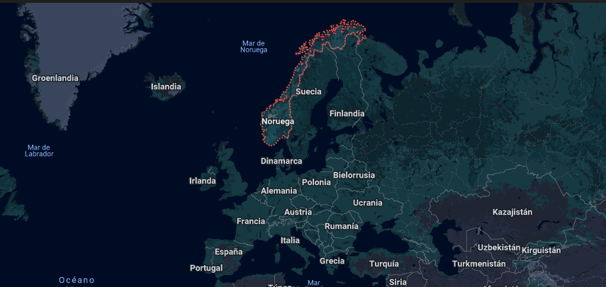
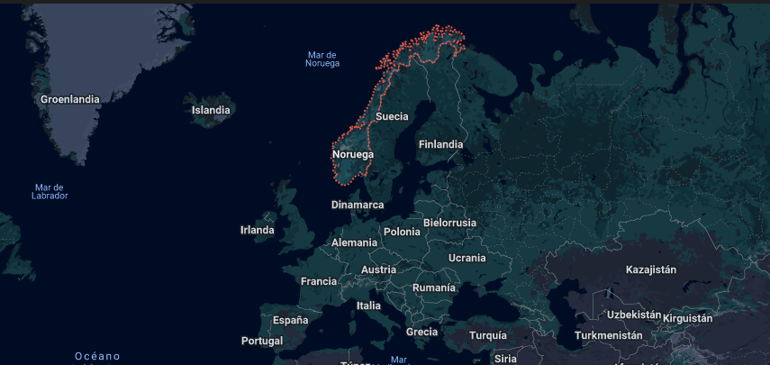
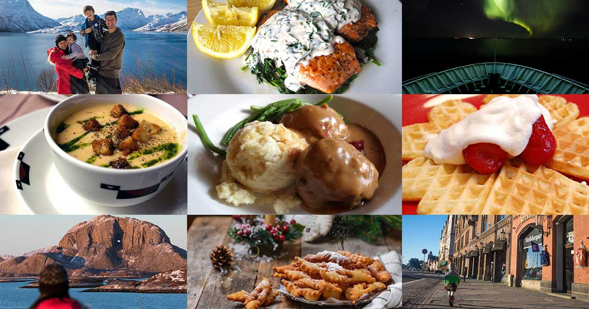
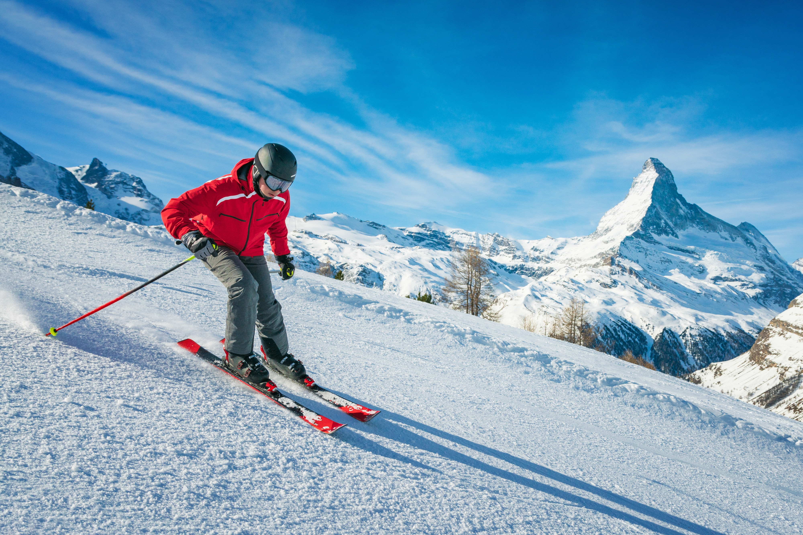

Home
Gastronomy
Sports
Famous People
Famous Landmarks
Norway
Introduction
Norway is a Scandinavian country located in Northern Europe, bordered by Sweden, Finland, and Russia. It has a population of approximately 5.6 million people and covers a territory of around 384,000 square kilometers. The country is widely known for its breathtaking natural landscapes, including fjords, mountains, and extensive coastlines. The capital city, Oslo, is one of the most important urban centers in Norway and stands out for its modern architecture, high quality of life, and strong connection to nature, despite its cold climate. Norway is also internationally recognized for its social welfare system, environmental awareness, and economic stability. The official language of the country is Norwegian, which has two written standards: Bokmål and Nynorsk. In addition, English is widely spoken, making communication easy for visitors and reinforcing Norway’s strong presence in the global community.
 

Gastronomy
Norwegian gastronomy is a rustic, seasonal cuisine featuring hearty stews, brown cheese, and foraged berries, often highlighting natural, pure flavors in a modern, sustainable contex

Famous Landmarks
Places in Norway are important because they help students learn about culture, geography, and history in English. Norway is a European country with unique natural features like fjords, mountains, and the Northern Lights, which are often used as topics in English lessons.
Learning about Norway also helps students practice vocabulary, such as countries, cities, weather, and nature. In addition, it helps students understand different cultures and compare them with their own, which is an important goal when learning English.
Finally, English is commonly used to talk about the world, so learning about countries like Norway helps students use English in real and global contexts.
An example is Geirangerfjord, one of the most famous fjords in the country, surrounded by steep mountains and iconic waterfalls such as “The Seven Sisters”. UNESCO World Heritage Site. 
Sports
Sport is a universal expression of human movement, where body and mind work together to overcome challenges, develop skills, and foster discipline. Through organized physical activity, people learn values such as effort, perseverance, respect, and teamwork. In addition to contributing to health and well-being, these practices strengthen social interaction, ignite a passion for self-improvement, and create spaces for connection among individuals from different cultures and generations.

© 2026 Norway Project.All rights reserved. The content of this website, including text, images, graphics, logos, icons, software, and any other material, is the property of its respective owner and is protected by copyright laws and international treaties. Its reproduction, distribution, or modification is prohibited without prior written authorization.